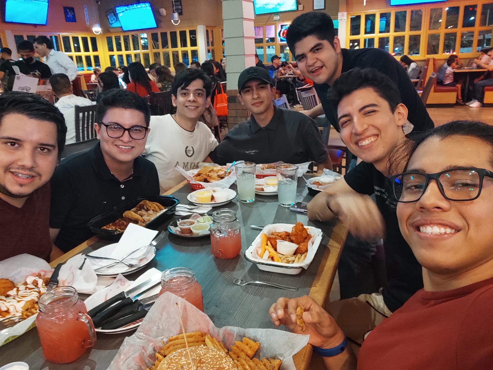
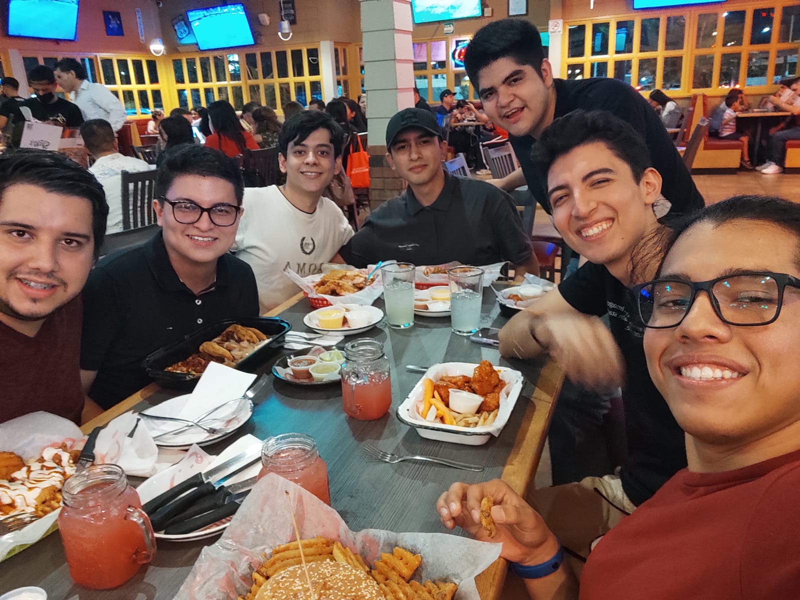
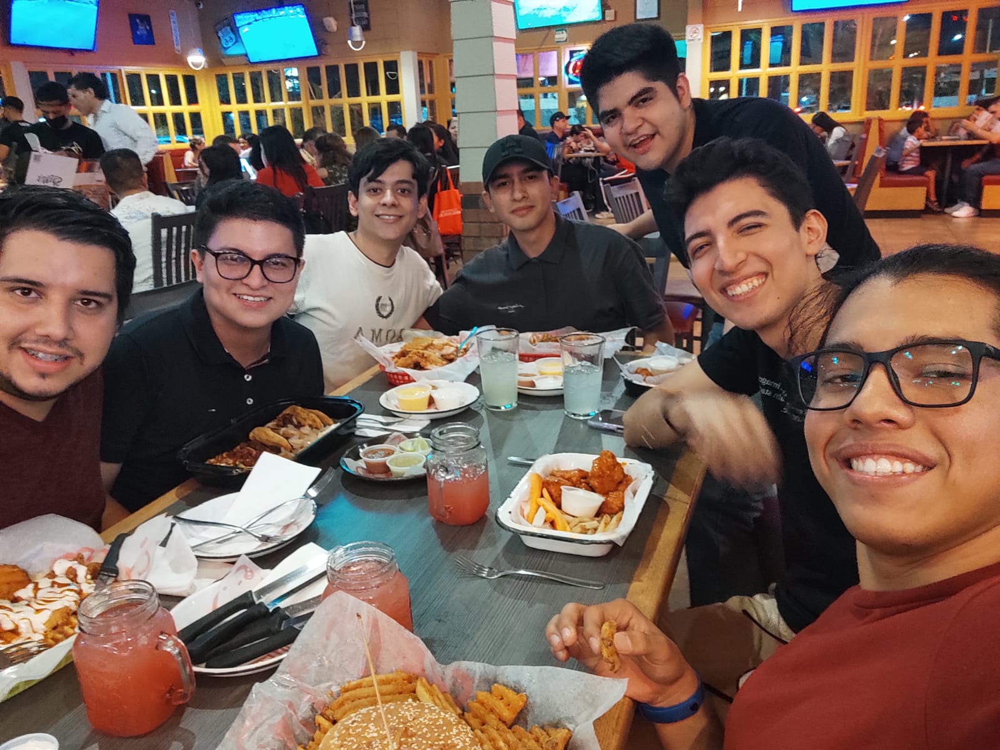

Hola yo soy
Mis amigos❤
Gracias a estas personas es por lo que vengo a la facu, me falta tomarme foto con algunos pero en verdad son mi motivacion para levantarme cada mañana, gracias!!.
 

Hola yo soy
Mi equipo se conforma de estos guapetones
Gracias a estas personas es por lo que vengo a la facu, me falta tomarme foto con algunos pero en verdad son mi motivacion para levantarme cada mañana, gracias!!.

,.
/ \
/..-'
.'
__.-,'',--,..
,-. ,-'' .',-\' / _ |
| | ,,'`` // | '| `
`. | _.-' /' | ()| ()|(,.-'''''-.
'` ,' / --. | '--' /
_,' / -' __..._ ,'
/ / _,-' ,.-
.-. ,' / _,.....,'- .'_ ,-:-'
\ \ .' / ' `.` \ \
`. | `..---._ / _. -- '-._..\.
`\ . _,-' .. _/ _
' /,' :.___,,.' ,-' |
,' '''`- ,,' /
,' . ,-'| _.-' ,'
,' ,/ ,' | _,' _.-'
.' _.-'/ ,' | ' _.-''
.'`-. | ,-' | / \ | ,:,-'
'. \ `-' | | ,' \ | '
`. \ | | / `._/
`. `. | | /
`-_`. | | | _..'
`|. | | | _.-'' _/
\ \ | | ,,-'\ /.,---`'
' \ | | _,-' ,'
\ \ |,-' /
_ \ \ | ,'
.`. \ \| / _.
\| `. / /' ,'
| / /--'
| |
|. | /
_ ' `._ | | ,-'.
|'-.._,,.-' `''| |'''' `. __.
| \ | `''' \
,' `-' `-....--'
_,,' `.
,''' , `-.--'.
' _'
`. . '. _ ' , :
- |. ,' `__,' \ ,' |
|`._ | `...- `._ _,-' |
_ | `---' `' `. _,'
`....,.._ / `' \ _,
''' `.___,,'
Delfin
La etimología de delfín nos lleva al vocablo latino delphin, un término derivado del griego delphís. Un delfín es un animal mamífero acuático que forma parte del grupo de los cetáceos. Los delfines son piscívoros: comen peces. Existen más de una treintena de especies de este animal que suele medir unos tres metros de largo y que tiene una única abertura nasal. El cuerpo del delfín es oscuro en su parte superior y blanquecino en el sector inferior. Cuenta con una cabeza grande, boca grande con dientes en sus dos mandíbulas, hocico alargado y ojos pequeños. Es importante mencionar que los integrantes de la familia Delphinidae viven en aguas saladas, por lo general tropicales o templadas. Los llamados delfines de río, en cambio, pertenecen al conjunto familiar Platanistoidea. La inteligencia es una de las características más sobresalientes de los delfines. Es habitual que interactúen con las personas, siendo muchas veces entrenados para participar de distintos tipos de espectáculos. Incluso son empleados por ejércitos para la detección de minas y otras tareas.